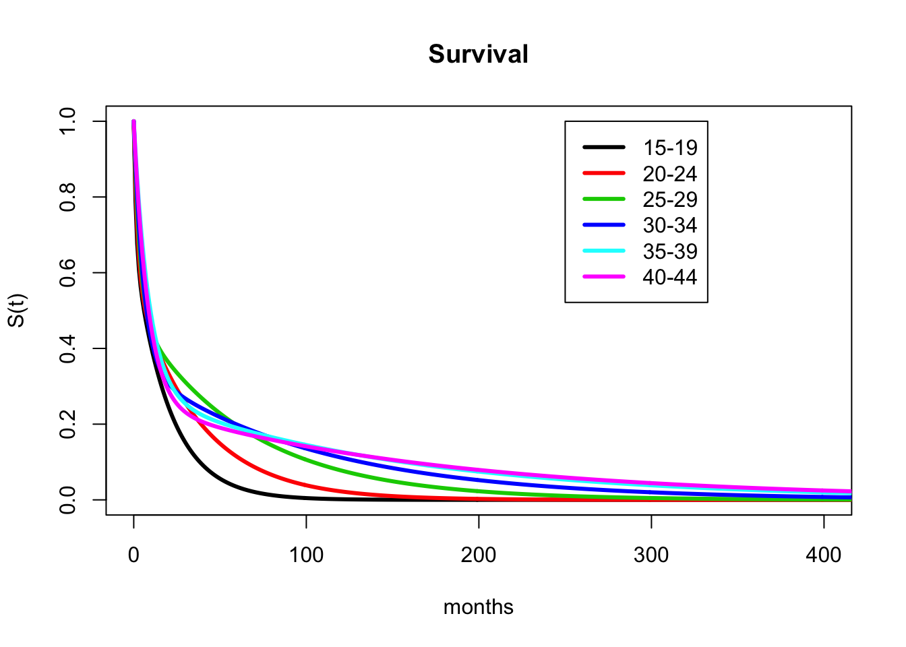
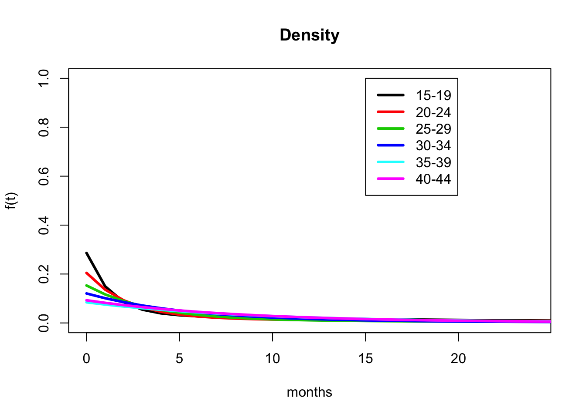

Chapter 6 Mixture Models
Mixed Exp Models by Current AgeCat
Mixture model across whole pop does pretty well but overestimates duration of young rels and underestmates duration of long rels. Let’s see if we can do better when each age cat is its own mixture model (2 lambdas and a mixture weight).
Here I fit 2-component mixture models to each of the age categories and plot them as separate lines.
Two models categories are displayed -
a series of mixed exponential models that were fit to specific ego age categories, which when are averaged according to pop size to compare to overall K-M and other models (this means that each age category has its own two rate params (rel dur) and proportion of rels in each distribution (weight))
one mixed exponential model with two rate params that apply to all age groups, but the weight changes by age category. The first model should fit K-M better, but this is to see if one short/long duration is a reasonable simplifying assumption (with weights changing by age)
6.1 Mixed Exp #1
a series of mixed exponential models that were fit to specific ego age categories, which when are averaged according to pop size to compare to overall K-M and other models (this means that each age category has its own two rate params (rel dur) and proportion of rels in each distribution (weight))

| Age Category | Short Dur (years) | Long Dur (years) | Prop. Short |
|---|---|---|---|
| 15-19 | 0.1 | 1.58 | 0.32 |
| 20-24 | 0.18 | 3.35 | 0.45 |
| 25-29 | 0.35 | 7.61 | 0.54 |
| 30-34 | 0.48 | 12.86 | 0.64 |
| 35-39 | 0.63 | 19.41 | 0.69 |
| 40-44 | 1.13 | 36.27 | 0.82 |
6.2 Mixed Exp #2
generalization of above: one mixed exponential model with two rate params that apply to all age groups, but the weight changes by age category. The first model should fit K-M better, but this is to see if one short/long duration is a reasonable simplifying assumption (with weights changing by age)

| Short Duration | Long Duration |
|---|---|
| 0.46 | 10.02 |
| Age Category | Proportion Rels Short Duration |
|---|---|
| 15-19 | 0.78 |
| 20-24 | 0.68 |
| 25-29 | 0.59 |
| 30-34 | 0.61 |
| 35-40 | 0.59 |
| 40-44 | 0.61 |